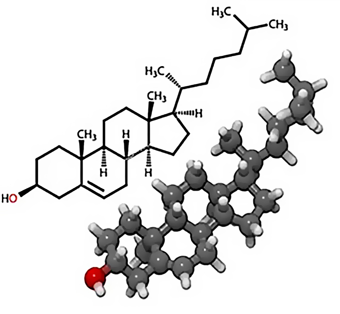
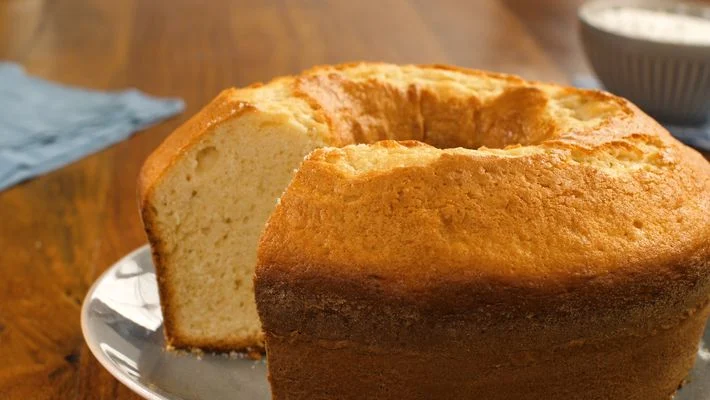

Confira agora o que você vai aprender neste módulo.
Vamos estudar as moléculas que compõem os alimentos, o quais são parte essencial da nossa vida e responsáveis por diversas funções no nosso corpo, e também vamos aprender como transformamos esses alimentos em movimento e força.
Além disso, vamos analisar as informações nutricionais que constam nos rótulos das embalagens dos alimentos e entender melhor os processos metabólicos do nosso corpo.
Siga conosco nesta caminhada! Até a próxima!
Olá, estudante!
Seja bem-vindo ao estudo da ciência dos fenômenos naturais. Você compreenderá as ciências da natureza e suas tecnologias por meio de um olhar integrado à biologia, à física e à química. Será valorizado o aprofundamento de saberes para a aplicação de diferentes aprendizagens em diferentes contextos sociais, culturais, históricos e de trabalho.
Podemos perceber que as ciências da natureza estão presentes de inúmeras formas na cultura e na vida em sociedade, possibilitando novas compreensões sobre o mundo. Desse modo, associam-se à tecnologia, tomando parte em todos os setores de produção e de serviços: da agropecuária à medicina, da indústria ao sistema financeiro, dos transportes à comunicação e informação, da produção de armas químicas aos aparelhos domésticos. Essa associação entre as ciências e as tecnologias resultou nas várias revoluções industriais, integra todas as dimensões práticas da vida humana e, consequentemente, molda nossos comportamentos e nossas identidades individuais e coletivas.
Nesta etapa, nossas discussões ajudarão você a encontrar informações científicas a respeito de diferentes estratégias alimentares e a justificativa para as diferentes instruções que recebemos no dia a dia sobre “o que comer e o que não comer”. Por exemplo, por que ouvimos tanto que comer alimentos integrais é importante?Por que limitar a ingestão de açúcar, farinha e alimentos ultraprocessados? Em todo caso, é necessário salientar que as questões relacionadas com a alimentação devem ser acompanhadas por um profissional de saúde com conhecimento na área, como nutricionista e médico, por exemplo.
Você já se perguntou por que sente fome? Provavelmente sim. É comum, inclusive, sentirmo-nos cansados ou até mesmo fracos quando não nos alimentamos bem. Essas sensações são respostas do nosso corpo à falta de algum alimento que deveria ter sido ingerido a fim de garantir a realização de nossas atividades do dia a dia. Quando nos alimentamos adequadamente, qualificamos a execução de nossas atividades e garantimos uma vida mais saudável e prazerosa.
Assim, percebemos que a alimentação não está relacionada apenas ao prazer em comer, mas principalmente em assegurar que nosso organismo receba a nutrição necessária para realizar seus processos vitais a partir da produção de energia.
Pense em todas as atividades que você faz desde o momento em que acorda até a hora de dormir. Caminhar até o trabalho, ficar de pé, limpar a casa, tomar banho são atividades que têm um custo energético. Mesmo quando estamos dormindo ou parados, nosso corpo continua a usar energia para manter os processos vitais ativos.
A necessidade alimentícia está centrada na utilização do alimento pelas nossas células para produzirem energia. A produção energética acontece quando utilizamos um açúcar simples (glicose) juntamente com o gás oxigênio (produto da respiração) no interior de nossas células. Lá acontece a liberação de energia e, na sequência, a excreção de resíduos também produzidos nessa reação química. Confira mais detalhes a seguir:
Os alimentos que ingerimos são compostos de carboidratos, gorduras, proteínas e outros nutrientes essenciais ao nosso organismo.
Após a ingestão, inicia-se o processo de digestão, no qual os carboidratos dos alimentos se transformam em glicose.
Ao chegarem ao intestino delgado, as moléculas de glicose e ácidos graxos passam pelas dobras intestinais, em que estão os vilos, e são absorvidas pelos enterócitos, células intestinais responsáveis pela absorção dos nutrientes. As moléculas então são quebradas em partes menores para serem transportadas por todo o corpo. Os carboidratos e as proteínas entram na corrente sanguínea pelas veias, já os lipídios entram primeiramente pelos vasos linfáticos e depois pelas veias, e todos chegam ao coração para serem distribuídos para o resto do corpo.
Dentro das células, mais especificamente nas mitocôndrias, essas moléculas são usadas no processo de produção de ATP, o trifosfato de adenosina. Nesse processo, a glicose passa por uma série de reações químicas para produzir o ATP, com o auxílio essencial do oxigênio. Junto ao ATP são produzidos água e gás carbônico: a água, resultando da reação entre o oxigênio e o hidrogênio nos elétrons transportados ao longo da cadeia respiratória; e o gás carbônico, liberado como um subproduto do metabolismo das moléculas de glicose.
Além da produção de todas essas moléculas, a respiração celular também libera calor como uma forma de energia térmica que mantém a temperatura corporal.

A alimentação está na base da pirâmide de uma vida saudável, pois é como o corpo processa os nutrientes necessários para a manutenção da vida. Além da produção energética, a alimentação está centrada, também, na renovação celular, conforme o documento divulgado pela Organização Pan-Americana da Saúde – OPAS.
A composição exata de uma dieta diversificada, equilibrada e saudável varia de acordo com as características individuais de cada pessoa (idade, sexo, estilo de vida e grau de atividade física), contexto cultural, alimentos disponíveis localmente e hábitos alimentares. No entanto, os princípios básicos do que constitui uma alimentação saudável permanecem os mesmos para todas e todos (OPAS, 2019).
Clique na imagem para ampliá-la.
Figura 1 – Alimentos in natura (diversidade de alimentos
necessários
ao
corpo)
Fonte: Organização Pan-Americana da Saúde (s. d.)
Não só a OPAS, mas também a Organização Mundial da Saúde – OMS e outras entidades globais, preocupadas com uma vida saudável, falam sobre as necessidades de uma alimentação para proporcionar uma vida digna para qualquer pessoa no planeta. Entretanto, será que existem condições necessárias para uma vida digna disponíveis de maneira global? Entre esse questionamento, também surgem outros.
A seguir, você verá como usar as ferramentas das ciências da natureza para refletir e tentar responder a essas perguntas.
A maioria das fontes dos alimentos são encontradas em organismos vivos. Ao comer, ingere-se grupos de substâncias químicas que participam de um sistema amplo que relaciona as substâncias ingeridas àquelas já encontradas no organismo. De tal modo, a alimentação é uma grande e complexa estratégia de interação química no corpo e exige inúmeras transformações e rearranjos nos sistemas corporais. Para além dos aspectos químicos, a alimentação também está relacionada a comportamentos socioculturais, estando vinculada ao modo de vida e à maneira com que os diferentes grupos de seres vivos se conectam e se comunicam.
Os seres humanos obtêm nutrientes por meio dos alimentos para manter seu corpo saudável. Acredita-se que as formas de consumir o alimento e os tipos de alimentos que consumimos foram modificando ao longo da história. À medida que a espécie evoluiu, suas estratégias de consumir o alimento também mudaram, como, por exemplo: em determinado período, em vez de comer apenas raízes e folhas, o ser humano passou a ingerir carne crua e, em seguida, a partir da manipulação do fogo, aprendeu a cozinhar e assar.
O ser humano pré-histórico comia de tudo. Já o moderno age de forma bem diferente. Os israelitas podiam comer gafanhotos, e esses são ainda apreciados em toda a África do Norte. Os hindus não comem carne de vaca, pois acreditam serem sagradas, já para os europeus, ela é indispensável na mesa. Assim, ao acompanhar a evolução do processo alimentar, conclui-se que a cultura tem forte influência na forma com que os alimentos são preparados e consumidos.
Ao investigar a culinária brasileira, é possível identificar a fusão perfeita das diversas culturas que compõem o país. Em cada uma das cinco regiões, podem ser encontrados pratos típicos bem diferentes. Se você gosta de um bom prato e quer saber mais sobre as características marcantes da culinária brasileira, veja a seguir as comidas típicas de cada região!
Clique ou toque para visualizar o conteúdo:
A gastronomia do Sul do país vai muito além do tradicional churrasco. Entre seus muitos pratos típicos, o arroz carreteiro se destaca como um dos favoritos gaúchos. Esse prato faz parte da história do Rio Grande do Sul e surgiu quando o principal meio de transporte de mercadorias eram as carroças puxadas por vacas.
Os carreteiros da época criaram esse prato simples com pouquíssimos ingredientes: o charque, que é uma carne que pode ser conservada para vários dias de viagem, combinado com o arroz, que define a base do prato.
Até pouco tempo atrás, mandioca, acarajé, moqueca e outras iguarias nordestinas não eram encontradas em nenhum lugar do Brasil. Mas, nos últimos anos, a culinária nordestina se popularizou em todo o país. Por exemplo, um prato típico do Ceará é o baião de dois, baseado em tradicionais ingredientes brasileiros, o arroz, o feijão e a carne seca.
As origens do baião remontam ao período seco do Nordeste, quando todas as suas coisas eram cozidas para evitar o desperdício, pois a comida era escassa e nada podia estragar. Hoje o baião de dois também é preparado com queijo queimado, bacon e temperos, como cebola, coentro e louro.
A culinária do Norte do país apresenta pratos com influências indígenas, como peixes e frutas típicas da região, oriundos da vasta riqueza natural da Amazônia. Um dos pratos mais consumidos na região é a mujica de peixe, que consiste em peixes grelhados (de preferência tambaqui) e um guisado temperado engrossado com farinha, servido com arroz branco ou outros acompanhamentos. Esse prato, nativo da região, é muito consumido pelos ribeirinhos, e a ideia é sempre reaproveitar o peixe grelhado da refeição anterior.
Há também influência indígena na culinária do Centro-Oeste do país tanto de índios brasileiros como dos vizinhos paraguaios. No entanto, essa região etnicamente mista também tem uma culinária muito diversificada, com influências de todo o Brasil. Come-se muito peixe, carne vermelha e até mesmo alguma proteína exótica. Um prato popular na região é a sopa paraguaia, que, na verdade, não é uma sopa, mas um bolo salgado à base de fubá.
Por ser uma região que experimentou intensa atividade durante os tempos coloniais do Brasil, o Sudeste é hoje uma boa mistura de culturas. Cada estado tem seus pratos típicos, mas um dos pratos mais deliciosos da região é o famoso feijão tropeiro, feito com feijão, farinha de tapioca, linguiça, casca crocante, alho, cebola, ovos e outros temperos.
As origens do nome remontam aos tropeiros, que eram pessoas que usavam os militares para transportar mercadorias, se reuniam para comer e inventaram o prato, que utilizava todos os ingredientes mais disponíveis na época. Até hoje, esse prato continua sendo um importante elemento das tradições de São Paulo e Minas Gerais.
Veja a seguir a tabela nutricional, com valores aproximados, do feijão tropeiro.
| Tabela Nutricional | %VD | |
|---|---|---|
| Calorias (valor energético) | 22,80 kcal | 1,14% |
| Carboidratos líquidos | 2,40 g | - |
| Carboidratos | 2,94 g | 0,98% |
| Proteínas | 1,53 g | 0,51% |
| Gorduras totais | 1,02 g | 1,85% |
| Gorduras saturadas | 0,33 g | 1,50% |
| Fibra alimentar | 0,54 g | 2,16% |
| Sódio | 0,54 g | 2,16% |
Tabela 1 – Tabela nutricional do feijão tropeiro
Fonte: Adaptado de
<https://vitat.com.br/alimentacao/busca-de-alimentos/alimentos/372-feij%C3%A3o-tropeiro>.
Acesso em: 14 abr. 2022.
Os diferentes alimentos presentes na culinária regional estão relacionados à cultura desses lugares e são ricos em uma série de nutrientes que contribuem para a realização dos processos metabólicos do organismo.
O carboidrato, por exemplo, presente no arroz do carreteiro, na mandioca e nas diferentes frutas é a mais abundante na natureza. Entre as várias funções dos carboidratos, a mais importante é a energética. Além de sua importância biológica, os carboidratos são matérias-primas para a indústria alimentícia e são encontrados em uma variedade de alimentos.
Biomolécula: Uma biomolécula é uma molécula presente nas células dos seres vivos que fazem parte de processos bioquímicos do organismo. Lembrando que uma molécula é a união de pelo menos dois elementos químicos.
Os carboidratos são compostos de moléculas de açúcar (glicose). Além de suas funções energéticas, também têm funções estruturais, atuando como esqueleto de certos tipos de células, como a celulose e a quitina, que fazem parte dos esqueletos de plantas e animais, respectivamente. Observe na imagem a seguir os diferentes tipos de carboidratos.
Clique na imagem para ampliá-la.
Figura 2 – Tipos de carboidratos
Fonte: Sesc EAD EJA (2023)
O amido, por exemplo, é um carboidrato de reserva energética para plantas e fungos. Os seres humanos também têm uma substância de armazenamento de energia: o glicogênio, que é armazenado no fígado e nos músculos. Quando o corpo precisa de energia, o glicogênio é em moléculas de glicose, um carboidrato simples com apenas seis átomos de carbono. O glicogênio é o resultado da ligação de milhares de moléculas de glicose, assim como a celulose. Assim, os carboidratos são substâncias extremamente importantes para a vida, e sua principal fonte são as plantas, que produzem carboidratos por meio da fotossíntese. Os vegetais absorvem a energia solar e a convertem em energia química, produzindo carboidratos.
Hidrolisado: Hidrolisar é decompor(-se) uma substância por hidrólise, ou seja, quebrar pela água.
Os lipídios, encontrados nos alimentos, como a gordura de carnes vermelhas e óleos vegetais, são moléculas de gordura formadas por ácidos graxos (moléculas grandes compostas de hidrogênio, carbono e oxigênio, com formação “COOH” no fim da cadeia de carbonos), muito importantes no fornecimento de energia para o corpo, pouco solúveis em água e, portanto, chamadas de . Os lipídios também atuam como isolantes térmicos, componentes da membrana plasmática, reservas de energia e na formação estrutural de alguns hormônios. Ao consumir uma quantidade de gordura superior à indicada, o ser humano pode sofrer danos à saúde, como colesterol elevado e outras doenças cardiovasculares.
Hidrofóbicas: Substâncias que não possuem afinidade com a água.
Mas então qual tipo de gordura deve ser consumido?
Gordura vegetal
É rica em gorduras insaturadas – livres de colesterol
e gorduras trans. Pode ser
encontrada no abacate, na linhaça e no azeite de oliva, por exemplo, e ajudar a
controlar os níveis de colesterol e prevenir doenças cardiovasculares.
Gordura animal
Composta principalmente por gordura saturada,
colesterol e gordura trans. É
encontrada em carnes, manteiga, creme de leite, leite integral e queijo integral.
Durante os exames de rotina, os médicos geralmente solicitam a dosagem de colesterol no sangue, classificado em:
O colesterol tem sido uma preocupação para médicos e nutricionistas nos últimos anos, pois muitos estudos foram realizados e apontaram para a importância dessa substância, que compõe grande parte do cérebro e é necessária para a saúde das células nervosas.
Do ponto de vista químico, o colesterol é um lipídio, classificado como esteroide. O colesterol e outras gorduras são insolúveis em água, o que também significa que são insolúveis no sangue. Veja a seguir a representação de uma molécula genérica de colesterol.
Clique na imagem para ampliá-la.
Figura 3 – Molécula de colesterol
Fonte: Fogaça (2023)
Tabela explicativa das siglas dos colesteróis com suas respectivas traduções:
| Sigla | Nome em inglês | Tradução |
|---|---|---|
| LDL | Low-density lipoprotein | Densidade da lipoproteína é baixa. |
| HDL | High-density lipoprotein | Densidade da lipoproteína é alta. |
Colesterol LDL
O LDL é a principal forma de transporte do colesterol. Essa lipoproteína contém 45% de moléculas de colesterol. A lipoproteína de baixa densidade é comumente conhecida como “colesterol ruim”. Existem sete subtipos de LDL, e, nos exames de sangue, o valor que encontramos refere-se ao colesterol LDL total. Desses subtipos, apenas partículas pequenas e densas de LDL são capazes de depositar colesterol nas artérias.
Colesterol HDL
O HDL, conhecido como “colesterol bom”, tem a função de retirar as moléculas de colesterol que se desconectaram das lipoproteínas. Dessa forma, o HDL transporta colesterol e triglicerídeos dos tecidos periféricos de volta ao fígado, no qual são convertidos principalmente em ácidos biliares.
As proteínas ingeridas a partir dos peixes, das carnes vermelhas, da linguiça e do feijão tropeiro, por exemplo, são substâncias que desempenham as mais diversas funções no organismo, como a formação e a estrutura celular, a atuação enzimática e a contração muscular.
É importante destacar que não existe processo biológico que não envolva proteínas.
A opção de comer frango quando se quer ganhar massa muscular está relacionada à função estrutural das proteínas. Durante algumas atividades, como musculação, ocorrem nos músculos, e os aminoácidos são usados pelo corpo para recuperação das lesões durante um processo chamado hipertrofia muscular. Quer saber mais? Então confira mais informações a respeito do tema:
Você sabia que as partes responsáveis pelos movimentos do nosso corpo são os músculos? E sabia também que, para realizar atividades físicas mais pesadas, como correr ou levantar pesos, é necessário exercitar esses músculos? Mas você sabe como isso funciona?
Quando os músculos são submetidos a esforços mais intensos, principalmente aqueles com os quais eles não estão acostumados, ocorrem pequenos danos nas fibras musculares, o que chamamos de microlesões. Elas não são graves. Pelo contrário, são normais e necessárias para o processo de fortalecimento muscular. Assim, quando ocorrem essas lesões, as proteínas que ingerimos auxiliam na recuperação delas, preenchendo a musculatura lesionada e provocando o crescimento muscular, também conhecido como hipertrofia.
Isso significa que, para fortalecer e aumentar seus músculos, é necessário que você realize um treinamento progressivo, aumentando gradualmente a intensidade dos seus exercícios para estimular o crescimento muscular e melhorar o seu desempenho.
Microlesões: Ao realizar microlesões, o corpo preenche aquele tecido ou aquela fibra (no caso da musculatura) reforçando o local dessa lesão de forma a ela resistir ao mesmo estímulo que poderá ser gerado novamente. É como pensar que utilizamos uma corda para levantar um peso, porém quando a corda arrebenta, trocamos ela por uma mais grossa.
O frango, além de ser uma rica fonte de proteína, em comparação com a carne bovina, apresenta outras características importantes, como menos gordura saturada e colesterol e maior valor nutricional, como ferro e zinco.
Lembre-se: diferentes fatores devem ser considerados para determinar se um alimento é mais ou menos saudável.
Essas características fazem do frango uma boa escolha para a construção muscular. No entanto, tal como a batata-doce, apenas parâmetros nutricionais não são suficientes para se chegar a determinadas conclusões. Muitas pessoas começam a fazer "dietas da moda” e não entendem nem refletem sobre seus efeitos ou riscos, tendo apenas como motivação a estética em busca do "corpo perfeito". Uma dieta equilibrada inclui uma variedade de alimentos, de diferentes cores e texturas. Alimentos como peixes, carnes vermelhas menos gordurosas, brócolis e feijão também são ótimas fontes de proteínas e podem ser inseridos na dieta.
Agora que você estudou sobre os diferentes tipos de macronutrientes (carboidratos, lípidos, proteínas), vamos colocar em prática essas aprendizagens fazendo uma visita ao nosso supermercado virtual? Bora para o desafio?
Ao refletir sobre as diferentes formas de se preparar os alimentos, como cozinhar um peito de frango ou fritá-lo, é possível entender que as transformações que um mesmo alimento pode passar relacionam-se ao modo de vida e à cultura de determinada população, além da descoberta do fogo e sua utilização para a transformação química de alimentos.
Veja o que dizem especialistas na área:
Caso prefira, escute apenas o áudio ou leia a transcrição da entrevista.
Olá, estudante EJA EAD do Sesc. Estamos aqui no podcast hoje. Eu sou professor Jardel e estou com o professor Daniel do meu lado.
Boa tarde, estudante do Sesc EJA. É uma satisfação estar aqui com vocês hoje.
No nosso podcast de hoje, o assunto é alimentação. Estamos aqui com duas especialistas que vão nos ajudar a entender como melhorar a nossa alimentação e como ter uma alimentação saudável. Vamos dar uma saudação a elas. Olá, Cris, tudo bem?
Tudo bem. Oi, pessoal, eu sou a Cris. Eu sou nutricionista, trabalho e atendo com áreas de nutrição esportiva e vegetariana e, desde já, gostaria de agradecer o convite.
Muito bem. Estamos aqui também com a Lari, que é nutricionista também. Tudo bem, Lari?
Olá, tudo bem, tudo certo. Obrigada pelo convite. Eu sou nutricionista e mais focada com doenças crônicas e cardiologia, basicamente, e trabalho agora em hospital, atualmente.
Muito bem, sejam bem-vindas ao nosso podcast. E eu queria começar com uma pergunta bem importante. Eu queria saber mais sobre o que é um macronutriente, o que é um micronutriente, como que isso afeta a nossa alimentação, como que isso é importante para a nossa alimentação.
Os macronutrientes são as proteínas, os carboidratos, os lipídios, que a gente conhece como gorduras. E eles são, de maneira geral, os responsáveis por serem as nossas fontes de energia. A gente pode, sim, ter algumas particularidades, mas, basicamente, são eles que fornecem essa nossa energia para a sobrevivência. E os micronutrientes, eles são basicamente as vitaminas e minerais. Que aí, assim, a gente poderia fazer um mesacast só sobre isso, mas tem funções relacionadas à visão, à produção de neurônios, à produção de energia, à questão de massa muscular, enfim. Então eles seriam, digamos que, de maneira geral, aqueles que atuam mais atrás, lá no backstage do show.
Então o suporte é dado pelos micronutrientes, enquanto os macronutrientes são os personagens principais, digamos assim.
Exatamente.
E como que a gente faz para ter um prato equilibrado, que tenha todos esses macronutrientes e micronutrientes? E outra coisa que eu tenho dúvidas também, que eu queria te perguntar, é qual a importância de consumir água, durante o dia, durante as alimentações?
Bom, então cada alimento vai ter uma fonte específica, então, de carboidrato ou de proteína, ou de lipídio, mais focada. Então por isso que um prato, eu sempre comento, que tem que ser um prato colorido, digamos assim, colorido, de uma beterraba vai ter aquela cor porque vai ter um betacaroteno, que é uma vitamina A. Então a carne, ela vai ser uma fonte de proteína de boa qualidade, o feijão vai ter uma fonte de fibras. Então, quanto mais colorido a gente conseguir fazer esse prato, mais fontes de vitaminas e minerais a gente vai conseguir. Isso ao longo do dia também, tanto no almoço quanto na janta seria importante. Em relação à água, também é importante. Todo mundo sempre comenta que o nosso corpo é 70% água, então é bem importante a gente manter essa hidratação sempre que possível, principalmente a questão intestinal ajuda bastante, questão de fibras também, formação de bolo fecal também está bem associada com isso. E a última parte da parte intestinal, do trato gastrointestinal, é a absorção de água, então o nosso corpo precisa de água também para fazer as trocas, enfim.
Sim, até porque o rim usa muita água, é importante filtrar essa água que corre pelo nosso corpo, e também tem a questão do sangue ser um grande rio que corre dentro de nós, que transporta tudo.
Sim. Tanto que a gente nota também que quando a gente faz uma urina mais escura é porque a gente está tomando pouca água, mais concentrada, então o rim, ele vai ter que trabalhar um pouco mais, e quando a urina está um pouco mais clarinha é porque a gente está tomando mais água, e, muitas vezes, fica quase da cor da água mesmo quando a gente urina.
Sim, sim, perfeito. E agora vamos dar uma especificidade para as gorduras, porque a gente vê, em todos os lugares, que existe a gordura saturada, a gordura insaturada, a gordura trans, certo? Qual a diferença entre as gorduras? É tudo a mesma coisa, só que a gente chama de maneiras diferentes, ou são diferentes entre si, de fato?
Então, a gente tem, sempre dá essa confusão, na verdade, então a gordura saturada, ela é uma gordura de pior qualidade, a gente pode dizer, então, a questão, na verdade, da insaturação ou da saturada, é a questão de cadeia mesmo. Então, a diferença, a gente tem uma dupla...
Uma ligação dupla.
... uma ligação dupla, isso, então essa vai ser basicamente a diferença, mas, no nosso corpo, é uma diferença muito importante, então a gordura saturada, ela está mais presente nos alimentos de origem animal, as gorduras insaturadas, de origem vegetal, então nos óleos, nos azeites, e as gorduras trans, elas estão mais associadas com produtos produzidos artificialmente pela indústria mesmo, então, é uma gordura totalmente feita pela indústria.
Posso fazer um adendo?
Claro, por favor.
Duas coisas, acho que está bem destacada a questão da gordura saturada, que a gente associa muito com essa questão de gordura animal, mas nós saímos de uma época de moda do óleo de coco, que também é uma gordura vegetal, na verdade, mas que tem uma quantidade de gordura saturada importante, e foi colocado pela indústria como a melhor gordura, mais saudável, enfim, então, querendo ou não, a Lari pode falar depois mais sobre isso, mas tem associação com a questão de risco cardiovascular, enfim, uma piora de perfil lipídico e dos colesteróis. E uma outra coisa, a questão também da gordura trans, a gente fala muito sobre ela na questão de processos de industrialização, então alimentos como biscoito recheado, pizza congelada...
Alimentos ultraprocessados...
Isso, exato, mas a gente tem uma pequena parcela de alimentos de origem animal que naturalmente tem gordura trans, porque isso é formado pelo rúmen, pela digestão, processamento do estômago, do intestino dos animais, como vacas e bois. Então não é verdade que é só de origem industrial, mas grande parte basicamente é.
A gente pode dizer que a maioria das gorduras trans vem de alimentos industrializados e ultraprocessados, mas existe uma parte também que vem da alimentação animal, é isso?
Isso, exatamente.
E o que todos esses diferentes tipos de gorduras, como eles afetam o nosso corpo? A questão do colesterol, todos eles vão ter a mesma função ou um vai ser pior do que outro?
Bom, é importante a gordura pela questão de produção de hormônios, então os hormônios são feitos pelas gorduras, então a gente precisa. Então, uma dieta sem gordura, ela não tem como ser, a gente não pode ficar sem gordura no nosso corpo, a gente tem que priorizar fontes boas, então a gente tem um limite, digamos, assim, de gorduras saturadas que a gente poderia consumir, porque ela está altamente relacionada com risco cardiovascular, e doença cardiovascular é a principal doença e causa de morte no mundo. Então uma coisa que a gente tem que cuidar é uma pandemia, querendo ou não. Então as gorduras saturadas, a gente teria que dar uma evitada. Quando tem algum problema de saúde, um colesterol alto, uma dislipidemia, que a gente diz, a gente teria que tentar reduzir mais ainda esse consumo e priorizar as fontes de alimentos insaturados, que seria azeite de oliva, oleaginosas, nozes, castanhas, que é bem importante. Essas gorduras vão ter um pouco mais de calorias também do que os outros macronutrientes, então a gente tem que cuidar bastante esse consumo deles. Mas basicamente é isso, falando da minha parte de cardiologista, da parte mais cardiológica, eu vejo que a gordura, a gente tem que cuidar bastante para tentar evitar. Ela tem uma alteração bem importante nas artérias do nosso corpo, então, pensando assim, a nossa artéria é como se fosse esse copo, essa caneca, quanto mais gordura for comendo saturada, mais ela pode ir fechando, que é a aterosclerose, que a gente chama. Então a aterosclerose já foi visto em crianças, então, crianças com 10, 12 anos que já têm aterosclerose, isso é muito grave, isso é muito preocupante.
E tem a ver diretamente com alimentação?
Sim.
E qual a relação das gorduras com o colesterol, elas podem aumentar o colesterol, podem diminuir o colesterol, colesterol ruim, bom?
Sim, de maneira geral, qualquer tipo de gordura vai aumentar todos os colesteróis, sendo ele o HDL, que é o bom, e o LDL, que seria o ruim. Para reduzir o LDL, que seria o colesterol ruim, a gente teria que reduzir gordura saturada e aumentar as gorduras insaturadas. O colesterol, o colesterol que a gente vê no rótulo colesterol, a gente não está se preocupando mais tanto com isso, a gente se preocupa, de fato, é gordura saturada e gordura insaturada e gordura trans também. Então o colesterol, se é até 200 miligramas de colesterol, isso não existe mais, essa referência, porque não tem tanto poder, porque, por exemplo, o ovo, que a gente usa bastante, que é uma forte fonte proteica, ela é rica em colesterol, e daí ninguém mais vai poder comer ovo? Não, o ovo tem albumina, tem um monte de vitaminas e minerais...
Tem outros nutrientes...
... tão importantes quanto.
Exato.
Tu falou de rótulo, eu queria aproveitar para fazer uma pergunta, que eu acho bem importante, eu tenho bastante curiosidade, que é, eu sei que o mercado tem várias informações nos rótulos, mas, às vezes, eu fico meio perdido, eu queria gostar de entender o que eu preciso olhar de mais importante no rótulo dos alimentos que eu vou comprar no supermercado, a tabela, os ingredientes, qual que é o foco para eu cuidar da minha alimentação?
Eu diria que, assim, ingredientes, é o mais importante, porque, às vezes, a gente olha assim, tem tantas calorias, mas o quanto isso é relevante para mim ou para ti, ou tem tanto de proteína, tem muita proteína, mas o quanto isso é relevante ou não para ti. Nos ingredientes, a gente sempre vai ter uma ordem do maior para o menor, então o que eu usei mais para fazer, se vem mais farinha, está no primeiro lugar, segundo açúcar, enfim, e eu digo sempre para meus pacientes, assim, se tu olhou na lista de ingredientes e teve um nome que tu não conhece, que tu não sabe onde é que tu encontra isso para fazer em casa, provavelmente esse alimento, ele tem alguma coisa que pode acabar, ou a curto, dependendo do caso, ou a longo prazo, te causando algum problema de saúde.
Esse nome estranho pode ser um conservante, um aditivo?
Aditivos, em geral, corante, conservante, pode ser até a questão da gordura trans que a gente estava comentando antes, que tem vários, tem cerca de uns 20, 23 nomes diferentes para se referir à mesma coisa, só para dar aquela enganada no consumidor. Outra coisa também, pensando nisso, assim, a gente tem uma nova forma de rotulagem. Então, do ano passado para cá, alguns ajustes aconteceram, e isso já chegou no Brasil, que é, na embalagem frontal, na parte da frente do alimento, a gente tem ali uma identificação de se esse alimento, ele é uma fonte, se ele é rico em açúcar ou sal, sódio, ou algum desses componentes de gorduras que podem, a curto ou a longo prazo, causar algum problema de saúde. Então também já é uma pista. Normalmente, esses alimentos estão processados, que têm esses ingredientes, exato, têm esses ingredientes, aí, estranhos, que a gente não consegue saber onde encontrar, a maioria deles costuma ter ali na embalagem frontal também alguma coisa de excesso de açúcar, sal, enfim.
Agora vai ter um alerta na frente.
Isso.
Normalmente, a tabela nutricional, os ingredientes ficam atrás, é mais difícil de ver, agora vai estar na frente.
Exato.
E o rótulo sempre costuma ficar muito pequenininho também, os ingredientes menores ainda. Então quem precisa usar óculos fica bem complicado fazer compras, então auxilia bastante.
E eu sei que também que, nos rótulos, aparecem quantidades de calorias ou se fala, pelo menos, em calorias diárias que eles têm que, daquele produto, que tu tem que consumir. O que são essas calorias? Por que a gente precisa delas? O que elas significam para nós?
Então, a energia que a gente recebe dos alimentos, então, elas podem vir, como a gente falou no início, ou de proteína ou das gorduras, ou dos carboidratos, e acho que uma das coisas complicadas, assim, de ter essa referência, é que, normalmente, essa referência de calorias diárias, ela é baseada em um modelo de adulto saudável, enfim, mas ela não necessariamente vai representar aquilo que todo mundo realmente precisa de calorias. A gente pode ter pessoas que, sim, precisam de menos, outras pessoas que precisam de mais, mas, querendo ou não, é uma forma geral de a gente conseguir ter uma orientação para a população em relação a esses cuidados de excessos calóricos.
Aquelas duas mil calorias que aparecem no rótulo não é para todo mundo.
Infelizmente, não, infelizmente, não.
E isso depende do foco que a pessoa tem com a alimentação, porque quem quer construir massa magra, músculo, tem uma alimentação totalmente diferente, mais regrada.
Sim.
E aproveitar porque, provavelmente, tem gente aqui que nos assiste, que gosta de fazer musculação, que tem esse cuidado, até mesmo idosos pela perda muscular, como é que, o que a alimentação tem a ver com o ganho de massa muscular?
A alimentação, ela vai dar suporte para esses processos do ganho de massa muscular acontecer, então uma das coisas que mais se fala, na verdade, é a questão da proteína. Então, por exemplo, quando eu faço um exercício físico, uma das, um dos processos que está aumentado ali, quando a gente termina o treino, é a tal da síntese de proteínas, e isso é um momento, daí, em que eu preciso ter um consumo, seja após o exercício ou ao longo do dia, maior desse tipo de nutriente. Então, esse é um exemplo. Outra coisa também é que a gente costuma também fazer adaptações lá no nosso músculo para que a gente consiga armazenar mais energia, já pensando em se preparar para uma próxima sessão. Então, normalmente, a alimentação, ela faz isso, ela dá esse suporte não só para a questão do ganho de massa muscular, mas até para a questão mesmo de evitar lesão, de conseguir realmente ter mais eficiência em fazer o exercício físico.
E pode ajudar, dependendo da alimentação, o desempenho num exercício, num esporte, alguma coisa que a pessoa está fazendo?
Com certeza, porque vamos pensar mais pela aquela base geral ali, que a gente falou das calorias. Se eu não tenho nem a energia suficiente para conseguir fazer bem o meu exercício físico, provavelmente o meu desempenho não vai ser o melhor possível. Provavelmente, eu vou, daqui a pouco, aumentar também o risco de lesão ou, daqui a pouco, até de desidratar, enfim. Então, por isso que eu digo essa questão do suporte. A gente tem esses detalhes que são importantes de serem ajustados quando a gente faz exercício físico, e conforme a gente vai se tornando mais treinado, ou ter uma competição, enfim, esses cuidados, eles são mais importantes, a gente tem que ficar mais atento a eles.
E pode ajudar, dependendo da alimentação, o desempenho num exercício, num esporte, alguma coisa que a pessoa está fazendo?
Com certeza, porque vamos pensar mais pela aquela base geral ali, que a gente falou das calorias. Se eu não tenho nem a energia suficiente para conseguir fazer bem o meu exercício físico, provavelmente o meu desempenho não vai ser o melhor possível. Provavelmente, eu vou, daqui a pouco, aumentar também o risco de lesão ou, daqui a pouco, até de desidratar, enfim. Então, por isso que eu digo essa questão do suporte. A gente tem esses detalhes que são importantes de serem ajustados quando a gente faz exercício físico, e conforme a gente vai se tornando mais treinado, ou ter uma competição, enfim, esses cuidados, eles são mais importantes, a gente tem que ficar mais atento a eles.
Cris, uma coisa que tu falou é que o músculo usa proteína para ganhar massa. Só que proteína a gente sempre associa com proteína animal, origem animal. Só que os vegetais também têm proteína, certo? Então não necessariamente, eu preciso ter uma dieta baseada em carne para conseguir ganhar músculo.
Na verdade, eu comento isso com meus pacientes. A não ser que tu tenha uma alergia ou uma questão muito específica, o teu corpo não sabe de onde está vindo aquela proteína. Tipo, ele não tem um alerta ali, ah, vem da carne, vem do feijão.
Vem do animal, vem do vegetal.
Exato. É fonte de proteína, digeri, eu tenho os aminoácidos, que são as partes menores, vai para onde precisa. Então, na verdade, o que a gente precisa é, todo mundo precisa de proteína, a gente precisa de um pouco mais de proteína quando a gente faz exercício físico, isso também vai depender a quantidade de qual é o tipo de exercício, objetivo, enfim, demanda. Mas as fontes de proteína, se não forem as animais, então, carnes, ovos, leite, os derivados, a gente tem opções que são vegetais também, então, por exemplo, feijão, lentilha, grão-de-bico, ervilha, soja. A gente consegue também proteína em algumas fontes como amendoim, castanhas, sementes, até mesmo a aveia, opções que a gente não conta como uma fonte de proteína, mas que sim também têm. Então a gente não necessariamente precisa que essas fontes sejam de origem animal, a gente precisa das proteínas.
Muito bom, muito bem. Eu queria finalizar aqui a nossa conversa, eu sei que é sempre importante para a gente ter uma alimentação baseada, a gente consultar com um nutricionista especializado, que vai elaborar uma alimentação de acordo, personalizada, e de acordo com aquilo que a gente precisa. Mas eu gostaria que vocês conversassem com o nosso estudante que está lá, que não tem acesso a um nutricionista, dicas finais de o que é mais importante ou algum caminho que ele pode estudar ou conhecer sobre, sem estar, necessariamente, em contato com uma consulta com um nutricionista.
Bem boa a tua pergunta. Eu gosto muito do guia alimentar da população brasileira. Eu sempre faço muita propaganda dele porque é um material muito rico, muito bom. Assim, então, o Ministério da Saúde fez a segunda edição em 2014, ele é excelente, ele fala os 10 passos para uma alimentação saudável, basicamente, é desembalar menos e descascar mais. Então tentar fazer, então cozinhar mais, habilidades culinárias, então tu vai gastar menos dinheiro fazendo isso também, inclusive. Se for ter que comer alguma coisa e priorizar restaurante a buffet, que tu consegue ter vegetais, verduras, tu tem uma opção melhor, uma gama melhor do que fast food, por exemplo, que vai ter mais gordura. Questão de frutas, vegetais, questão também de in natura, ultraprocessados, tentar reduzir, que foi o que a gente comentou mais cedo. Então, eu sempre faço muita propaganda do guia, que é, ele tem em torno de 80 a 100 páginas e ele é superlúdico, ele é ótimo para ler. Agora também puxando um pouco para a parte da pediatria, também tem para as crianças abaixo de dois anos, então para quem tem criança em casa, isso ajuda muito, questão de aleitamento materno, fórmulas infantis, isso é bem importante também. E a própria introdução alimentar também, a introdução alimentar está superassociada com risco cardiovascular depois, também, enfim, com a nossa... o que a gente gostaria de comer depois, o que nossos esquemas alimentares, quando a gente vai crescendo também, que vão moldando.
Dependendo da faixa etária.
Isso, que vai moldando também. Então eu faço superpropaganda para esse guia, para quem realmente não consegue ir numa nutri agora, acho que já consegue começar um pouquinho com pequenos passos, assim.
Repete o nome do guia, então, para a gente fixar com o estudante.
É Guia Alimentar da População Brasileira.
E o acesso a esse guia é fácil?
Gratuito, dá para colocar no site do Ministério da Saúde. Colocando ali no buscador, ali no buscador, é isso.
Aparece um PDF ali.
É isso aí, tem PDF, é bem legal, bem bom.
Muito bem, fico muito feliz com a dica, fico muito feliz com a presença de vocês aqui.
Muito obrigado por disponibilizarem do tempo de vocês para estar aqui hoje com a gente.
Eu acho que a nossa conversa foi muito boa, eu acho que o nosso estudante deve ficar muito satisfeito com todas as informações que a gente conseguiu tirar daqui, com toda a ajuda que vocês trouxeram para nós. Muito obrigado.
Eu que agradeço. Obrigada.
Obrigada.
Muito obrigado. Continue estudando lá no material, no estudante, que a gente está lá sempre disponível para vocês nos fóruns. Qualquer dúvida, é só perguntar.
Espero que tenha sido de grande ajuda a nossa conversa hoje. Vocês podem continuar nos acessando nos fóruns, como o professor Daniel falou, em todas as plataformas que estão disponíveis no nosso sistema. Muito obrigado e até a próxima.
Até a próxima.
A seguir, você estudará as transformações químicas que podem ocorrer nos alimentos.
Para compreender melhor como funciona o organismo, que transforma os alimentos e as biomoléculas estudadas em energia, é necessário entender como as transformações acontecem ao seu redor. A transformação é uma das principais propriedades dos materiais encontrados na natureza.
Esse poder transformador pode ser usado para produzir novos materiais, preservar alimentos, ganhar energia, combater doenças e muito mais. Nas ciências da natureza, há explicações que permitem sistematizar o conhecimento sobre as transformações ou, como são chamadas: as reações químicas.
As reações acontecem a todo momento, por exemplo, durante cada respiração e também em milhares de vezes durante o uso de componentes eletrônicos, como celulares e computadores.
Aliás, você sabe o que é uma reação? Confira:
Presente nos seres vivos, no corpo humano, nas plantas, nos alimentos, na indústria e em tudo! Essa é a química! Essa ciência estuda as transformações que envolvem matéria e energia.
Quais são as suas aplicações? Como formar novas substâncias por meio de ligações químicas? A química está em nosso dia a dia, por exemplo, quando um alimento fica exposto às condições climáticas, ocorre a transformação em adubo, ação ocasionada por microrganismos que degradam a matéria orgânica. Outro exemplo é quando um objeto metálico permanece sob as intempéries climáticas, como sol, chuva e umidade, ele enferruja.
A transformação química é um fenômeno no qual ocorre a mudança de propriedades da matéria, a partir da transformação do seu estado inicial no estado final.
Isso e muito mais você verá durante o Ensino Médio. Além disso, estudaremos a tabela periódica, as principais funções inorgânicas, como ácidos, bases, sais e óxidos, e a aplicação da química no cotidiano.
Uma reação pode ser identificada por sua evidência visual, que geralmente é algum tipo de mudança ocorrido no material. Você consegue perceber alguma reação química em um bolo, como na imagem a seguir?
Clique na imagem para ampliá-la.

Figura 4 – Bolo assado
Fonte: Vechi (c2005-2022)
Em um bolo, os ingredientes se misturam e, sob forte calor, sofrem reações químicas que transformam uma massa disforme e difícil de digerir em um alimento gostoso e nutritivo.
A transformação e a reação dos múltiplos ingredientes do bolo é fácil de ver. Sua cor dourada, quando pronto, é um indicativo de várias transformações que ocorreram nas moléculas que o formam. Especificamente esse processo que “doura” o bolo, é possível ver diariamente, mas sem reparar. Analise esse fenômeno mais de perto assistindo ao vídeo a seguir: A reação de Maillard.
A reação de Maillard
É uma reação química entre as proteínas e os açúcares nos alimentos crus. Com ajuda do calor, essa reação produz moléculas que dão aos alimentos dourados sua aparência e seu sabor característico.

Fonte: Souza (2020)
Nesse exemplo temos carboidratos e proteínas (reagentes) interagindo (de maneira complexa) e transformando-se nas moléculas douradas (produtos) de sabor e aroma dos alimentos assados. Podemos ver essa reação no dourado de um bolo ou na crosta saborosa de uma carne assada e compreendê-la de acordo com estes exemplos:
Proteína + açúcar + calor → molécula do sabor + água
Já no exemplo seguinte, veja a reação de uma maneira mais aprofundada:
Açúcar + proteína → molécula do sabor + água
As reações são transformações da matéria ao redor, em que uma substância se transforma em outra e ocorre necessariamente a quebra de ligações de um composto e a formação de novas ligações. O primeiro composto é chamado de reagente e os compostos finais, de produtos. Veja o exemplo seguir:
Clique na imagem para ampliá-la.
![Esquema gráfico de uma equação química. À esquerda, há os “Reagentes”, com o texto “Substâncias iniciais que reagem entre si”. Essas substâncias, representadas por círculos coloridos, estão ligadas pelo sinal de adição e são chamadas de “Regente A” e “Reagente B”. Elas passam por um processo de reação, indicado por uma seta, apontada para a direita, no meio da imagem. À direita, há os “Produtos da reação”, com o texto “Substâncias finais que se formam”. Essas substâncias são representadas por círculos coloridos, chamados de “Produto C” e “Produto D”, também ligados pelo sinal de adição.](../../assets/objetos/fig04.jpg)
Figura 5 – Reação química
Fonte: Sesc EAD EJA (2023)
Essa maneira de descrever uma transformação é chamada de equação química. Ela demonstra que houve uma mudança estrutural nas substâncias, evidenciando assim uma reação/transformação. Não serão analisadas as reações complexas agora, o importante é perceber que essas transformações acontecem todo dia à sua volta e são importantíssimas.
Observe com atenção, no seu dia a dia, as reações químicas que ocorrem durante atividades, como cozinhar, limpar e se movimentar. Você poderia dizer se essas reações químicas liberam ou consomem energia?
As reações fazem parte da vida constantemente, desde as transformações químicas para a quebra de nutrientes alimentares até a transformação química dos alimentos que ocorre nas diferentes maneiras de prepará-los.
As reações e as transformações podem explicar a mudança dos alimentos crus até seu cozimento. As transformações também podem explicar como um alimento é capaz de fornecer energia para o corpo.
Durante as transformações, as moléculas podem ser quebradas e reorganizadas para absorver ou liberar energia. Por exemplo, durante a queima de combustíveis, como carvão, gasolina ou gás de cozinha, ocorre liberação de energia. Essa energia, chamada de energia térmica, se apresenta como fogo e pode ser medida.
Da mesma forma, a quebra dos alimentos durante a digestão, e dos nutrientes pelas células, libera energia térmica que pode ser expressa em calorias (cal) ou quilocalorias (kcal). Você está familiarizado com as calorias dos alimentos?
A ingestão calórica deve estar em equilíbrio com o gasto calórico (OPAS, 2019).
Observe na imagem a seguir os valores nutricionais presentes em uma caixa de leite. Repare no valor da energia que esse alimento pode liberar quando ingerido em determinada porção.
Clique na imagem para ampliá-la.

Figura 6 – Rótulo de leite com informação nutricional
Fonte: Kan Academy (c2023)
Segundo as informações apresentadas no rótulo, uma porção de 200mL de leite contém de 70 kcal (ou 298 kJ). Esse alimento pode ser metabolizado pelo organismo em reações químicas para que forneça essa energia disponível ao organismo.
Energia potencial: Toda aquela que está armazenada, mas ainda não sofreu mudança ou foi utilizada. A unidade de medida é Joule[J], porém a mais utilizada é a caloria [cal] ou quilocaloria [kcal].
Caloria é um termo utilizado para a medida de calor/energia liberado em uma transformação química. Para se calcular as calorias dos alimentos, eles são colocados dentro de um equipamento chamado calorímetro, como você pode ver no esquema a seguir:
Clique na imagem para ampliá-la.
Figura 7 – Calorímetro
Fonte: Dreamstime (c2000-2023)
Mas, na prática, você sabe como funciona um calorímetro? Observe:
O calorímetro funciona da seguinte forma: uma amostra do alimento é queimada dentro de uma câmara mergulhada na água. À medida que o alimento queima, ele perde sua energia em forma de calor e aquece a água. Para obter o resultado, mede-se a temperatura inicial e a final da água a fim de descobrir o calor específico do alimento (ou as calorias).
De forma semelhante, o corpo “queima” os alimentos e os transforma em energia. Mas como as calorias são “usadas” pelo organismo? Ao comer algo, costuma-se dizer que se ingere calorias. Na realidade, o alimento passa por uma série de processos de transformação dentro do organismo, e esses processos liberam a energia que o corpo necessita, além de liberar os nutrientes necessários ao funcionamento do organismo.
Quer saber mais sobre essa reação química? Assista ao vídeo a seguir e compreenda, com mais detalhes, a produção de energia no interior das células.
A transformação dos alimentos em energia em nosso corpo pode ser entendida como um processo químico quando, por exemplo, ingerimos um alimento rico em açúcares como a glicose. Essa glicose reage com o ar que respiramos e libera a energia em calorias de que o nosso corpo precisa. O resultado dessa reação química é a liberação de gás carbônico e água pelo nosso organismo.
C6H12O6 + 6 O2 → (libera energia)→ 6 CO2 + 6 H2O
glicose + gás oxigênio gás carbônico + água
Isso ocorre no interior das células para a liberação de energia, de acordo com a imagem a seguir:
Fonte: Santos (c2022)
Ou seja, a alimentação e a respiração produzem combustível por meio das calorias que são ingeridas.
Você pôde entender até aqui que a alimentação é importante. Contudo, é necessário refletir sobre como balancear o que é ingerido, levando em conta os produtos alimentícios adquiridos. O corpo precisa de proteínas, vitaminas e minerais para se manter regulado, além disso, eles são essenciais em diversos momentos, como na construção dos músculos, na proteção dos ossos e na produção de hormônios. Quando há a falta de algum desses grupos de alimentos, o corpo não funciona corretamente ou na sua melhor forma. Os efeitos de uma alimentação desbalanceada podem ser: sono em excesso, má digestão, desatenção, raciocínio lento e, até mesmo, indisposição para atividades.
Talvez você já tenha ouvido que quanto mais colorido for o prato de comida, melhor. Inicialmente, pense sobre como alimentar-se além do paladar. Um alimento bonito é mais chamativo e interessante do que um feio e de cor pálida. Mesmo que seja um prato que você nunca experimentou ou com ingredientes que você não gosta, por seu visual, torna-se mais desejado. Qual dos pratos a seguir é mais atrativo para você?
Clique ou toque para visualizar o conteúdo.
Clique ou toque para visualizar o conteúdo e ampliar as imagens.
Alimentos com as mesmas cores
Alimentos com cores diferentes
As cores não são somente para embelezar o prato, mas indicam composições diferentes de vitaminas, minerais e substâncias bioativas e antioxidantes, como indica a Abeso (Associação Brasileira para o Estudo da Obesidade e Síndrome Metabólica). Nutricionistas indicam pelo menos cinco cores diferentes no prato. Isso não significa que um prato montado da mesma cor não tenha nenhum valor nutricional, mas indica que você escolheu alimentos do mesmo grupo alimentar, como batata e massa
A seguir, alguns exemplos de alimentos separados por grupos de cores:
Vermelho: tomate, morango, pimentão, pimenta, melancia
Verde: brócolis, abobrinha, abacate, alface, agrião, rúcula
Roxo: berinjela, uva, repolho, beterraba
Amarelo: maracujá, pimentão, abacaxi, melão, milho
Branco: mandioca, batata, alho, cebola, couve-flor, leite
Marrom: carnes e leguminosas, como feijão e grão-de-bico
Laranja: cenoura, abóbora, laranja, acerola, mamão
Com essa análise das cores dos alimentos, fica mais fácil montar um prato saudável. Agora você pode verificar também os alimentos industrializados que consome e como fazer escolhas melhores. Anteriormente, você pôde observar um rótulo de alimento com informações nutricionais, com destaque para suas calorias, agora será examinado além do valor energético.
Para praticar um pouco mais, que tal identificar os pratos saudáveis?
Sempre que você for escolher um produto, comece por seus ingredientes. Os itens com maior quantidade aparecem primeiramente na lista. Se você for alérgico ou intolerante a algum item da lista, leve isso em consideração, pois poderá haver uma reação alérgica. Evite alimentos com ingredientes de nomes como benzoato de sódio, hidroxianisol butilado ou hidroxitolueno butilado, pois esses compostos têm por finalidade melhorar o aspecto e a durabilidade dos alimentos, sem agregar valor nutricional. Quanto menor a lista de ingredientes, menos processado o alimento será, portanto mais saudável.
Observe as recomendações do Ministério da Saúde, levando em consideração diferentes processos de produção de alimentos.
Clique ou toque para visualizar o conteúdo:
Alimentos processados são alimentos que sofreram alterações químicas e/ou físicas em sua constituição, nas etapas de processamento na indústria. Essas alterações buscam transformar o alimento natural em um produto pronto para consumo. Nesses processos estão incluídos a higienização, a fermentação, o cozimento, a desidratação, além da adição de corantes, estabilizantes, conservantes, aromatizantes e adoçantes.
São temperos extraídos de alimentos in natura ou diretamente na natureza. Exemplos: óleos, gordura, açúcar e sal.
São obtidos diretamente de plantas ou animais. Não sofrem nenhum tipo de alteração na indústria. Exemplos: peixes, carnes, ovos, frutas, legumes, verduras.
Contêm alterações mínimas que aumentam o tempo de prateleira (validade), como pasteurização, limpeza, moagem, secagem, congelamento, sem adição de ingredientes culinários. Exemplos: cortes de carne, carnes congeladas, leite, iogurte natural, grãos (arroz, feijão), tubérculos lavados, farinhas.
Contêm adição de ingredientes culinários nos alimentos in natura ou minimamente processados, como sal ou açúcar, para torná-los duráveis e mais agradáveis ao paladar. Exemplos: conservas de legumes, extrato ou concentrado de tomate, frutas em calda ou cristalizadas, peixes enlatados (atum e sardinha), queijos.
São alimentos formulados pela indústria e que sofreram diversas alterações, como extrusão, moldagem, pré-fritura e pré-cozimento; e adições, como estabilizantes, corantes, adoçantes, conservantes e aromatizantes (todos aqueles ingredientes de nomes difíceis de serem pronunciados e que não usamos em casa). Exemplos: biscoitos, sorvetes, balas, chocolates, macarrão instantâneo, bebidas lácteas, salgadinhos, refrigerantes, néctar de frutas, suco em pó, produtos congelados e prontos para comer (pizza, lasanha), embutidos (presunto, salame, peito de peru).
Fique atento à regra de ouro: prefira alimentos in natura ou minimamente processados e preparações culinárias a alimentos ultraprocessados, conforme orienta o Guia Alimentar da População Brasileira, do Ministério da Saúde.
A Agência Nacional de Vigilância Sanitária (Anvisa) é o órgão governamental que promove a proteção da saúde da população e assim faz o controle sanitário da produção e do consumo de produtos e serviços alimentícios. Ela estabelece quais informações devem constar nos rótulos dos alimentos para garantir a qualidade do produto e a saúde da população.
Em outubro de 2020, a Anvisa definiu novas normas referentes à rotulagem nutricional, que entraram em vigor em outubro de 2022. O objetivo é auxiliar o consumidor a fazer escolhas alimentares mais conscientes.
Clique na imagem para ampliá-la.
![A imagem mostra um pacote de batatinhas chips apresentando o novo modelo de rotulagem alimentícia. Na parte frontal do pacote está escrito: chips, batatinhas, original; peso líquido 40 gramas; batata frita ondulada; alto em gordura saturada e sódio. No verso consta a informação nutricional detalhada em valor energético, carboidratos totais divididos em açúcares e açúcares adicionados, proteínas, gorduras totais divididas em saturadas e trans, fibra alimentar e sódio. A lista de ingredientes informa alergênicos e diz que o produto não contém glúten.](../../assets/objetos/fig09__.jpg)
Figura 8 – Modelo de nova rotulação da Anvisa
Fonte: Libânio (2022)
A lista de ingredientes informa todos os ingredientes que compõem o produto. Alguns componentes podem aparecer com diferentes termos. O açúcar pode aparecer como sacarose, glicose, xarope de glicose, dextrose etc. Alimentos de ingredientes únicos, como açúcar, café, farinha de mandioca, leite, vinagre, não precisam apresentar lista de ingredientes.
A lista de ingredientes deve estar em ordem decrescente, isto é, o primeiro ingrediente é aquele que está em maior quantidade no produto e o último, em menor quantidade. Veja o exemplo:
Passe o mouse ou toque no rótulo para ampliá-lo.
![Informação nutricional, porções por embalagem: cerca de 13, porção: 20 g (11 unidades). Para porção de 100 g: 339 kcal; 80 g de carboidratos dos quais: 69 g de açúcares totais e 69 g de açúcares adicionados; 4,4 g de proteínas; 0 g de gorduras totais, 0,6 g de fibras alimentares e 48 mg de sódio. Para porção de 20 g (11 unidades): 68 kcal; 16 g de carboidratos dos quais: 14 g de açúcares totais e 14 g de açúcares adicionados; 0,9 g de proteínas; 0 g de gorduras totais; 0,1 g de fibras alimentares e 9,6 mg de sódio. Porcentagem de valores diários fornecidos pela porção: 3% do valor energético, 5% dos carboidratos, 28% dos açúcares adicionados, 2% das proteínas.](../../assets/objetos/figura_9_zoom.png)
Figura 9 – Informações nutricionais de um pacote de pipoca doce (250g)
Fonte: Sesc EAD EJA (2023)
A pipoca doce tem alto teor de açúcar adicionado, como podemos perceber no rótulo frontal do produto. Nos ingredientes, o xarope de glicose é o primeiro componente citado, comprovando que o produto é rico em açúcar. Como aparece na informação nutricional, os açúcares adicionados são 14 g em uma porção de 20 g de pipoca doce, ou seja, a maior parte da pipoca doce é feita de açúcar!
Após um olhar atento à lista de ingredientes, chegou a hora de contemplar a tabela de informação nutricional. Deixe o valor energético como último item de escolha em um produto alimentício, pois nem sempre aquele com menos calorias será o mais saudável. Opte por um alimento com o maior nível de fibras possível e evite aqueles com gordura saturada. Quanto às gorduras totais, busque aqueles com no máximo 5g para cada 100g de produto, pois, posteriormente, você verá os tipos de gordura e entenderá a importância de alguns.
Compare! Um lanche composto de cheeseburguer, batata frita, refrigerante e casquinha de sorvete é similar em calorias a um lanche saudável!
Veja as informações a seguir passando o mouse ou clicando nos alimentos.
694 kcal
Balão 1: Cheeseburger + refrigerante (300 ml) + casquinha de sorvete de baunilha + batata frita
Balão 2: Pão francês (1 unidade) + requeijão light (uma colher de sopa) + peito de peru defumado light (2 fatias) + morango (5 unidades médias) + pera (1 unidade média) + frozen iogurte (1 porção de 220 g) + suco de laranja (250 ml) + barra de cereais de banana (1 unidade de 25 g)
Figura 10 – Comparação de lanches em calorias
Fonte: Sesc EAD EJA (2023)
A tabela de informação nutricional deve conter apenas letras na cor preta em fundo branco e deverá ficar próxima à lista de ingredientes. Na nova resolução da Anvisa, são obrigatórios a declaração de açúcares totais e adicionais, a declaração do valor energético e dos nutrientes por 100 g ou 100 ml e o número de porções por embalagem. Observe as informações contidas na imagem a seguir, clicando nos botões:
![Informação nutricional: porções por embalagem 000 porções. Porção: 000 g (medida caseira). Estão descritos os itens na primeira coluna: valor energético (kcal), carboidratos totais (g), que é subdivido em: açúcares totais (g) e açúcares adicionados (g); proteínas (g); gorduras totais que estão subdivididas em: gorduras saturadas (g) e trans (g); fibra alimentar (g) e sódio (mg). A segunda coluna é referente a uma porção de 100 g do produto, a terceira coluna é referente a uma porção menor em gramas e a quarta coluna indica a porcentagem do nutriente em relação à quantidade diária de consumo para uma pessoa em média com 70 kg.](../../assets/objetos/figura11.png)
Figura 11 – Tabela nutricional
Fonte: Sesc EAD EJA (2023)
Os açúcares são parte dos carboidratos totais. É importante saber a quantidade de açúcar inserida no produto para que o consumidor não ingira esse ingrediente em demasia e, principalmente, para que pessoas diabéticas controlem seu consumo.
As gorduras totais incluem as saturadas e trans. As gorduras trans são prejudiciais à saúde e o ideal é evitá-las.
As fibras alimentares ajudam no trânsito intestinal e promovem saciedade.
O sódio (conhecido também como sal de cozinha ou cloreto de sódio) deve ser consumido, mas em quantidade limitada principalmente por pessoas que tenham pressão alta (hipertensão). Ele não aumenta a pressão instantaneamente, mas o consumo elevado de sódio a longo prazo está diretamente ligado ao aumento do risco de doenças crônicas como hipertensão, doenças cardiovasculares, entre outras.
Informação sobre açúcar total e adicional (Vermelho na imagem)
Declaração do valor energético e dos nutrientes por 100 g ou 100 ml (azul na imagem)
Número de porções por embalagem (em verde no texto)
Os açúcares são parte dos carboidratos totais. É importante saber a quantidade de açúcar inserida no produto para que o consumidor não ingira esse ingrediente em demasia e, principalmente, para que pessoas diabéticas controlem seu consumo.
As gorduras totais incluem as saturadas e trans. As gorduras trans são prejudiciais à saúde e o ideal é evitá-las.
As fibras alimentares ajudam no trânsito intestinal e promovem saciedade.
O sódio (conhecido também como sal de cozinha ou cloreto de sódio) deve ser consumido, mas em quantidade limitada principalmente por pessoas que tenham pressão alta (hipertensão). Ele não aumenta a pressão instantaneamente, mas o consumo elevado de sódio a longo prazo está diretamente ligado ao aumento do risco de doenças crônicas como hipertensão, doenças cardiovasculares, entre outras.
Confira mais algumas informações importantes clicando ou tocando para visualizar o conteúdo.
Agora, vamos praticar!
Conforme os conhecimentos vistos até aqui, será analisado um dos produtos mais consumidos no mundo, o pão. Na tabela a seguir, há dois rótulos de diferentes tipos de pão, um de forma e outro integral. Os dois tipos têm muitos ingredientes, incluindo conservantes, que não são benéficos para a saúde, de acordo com o estudado até então. É possível perceber que o pão integral é mais calórico e tem mais gorduras que o pão de forma. Nesse caso específico, a única vantagem do pão integral é o valor superior de fibras, que facilita o processo digestivo.
|
Pão de forma |
Pão integral |
||||||
|---|---|---|---|---|---|---|---|
|
Lista de ingredientes: farinha de trigo enriquecida com ferro e ácido fólico, açúcar, óleo de soja, glúten, sal, sal hipossódico, conservadores propionato de cálcio e sorbato de potássio, emulsificante estearoil-2-lactil lactato de sódio e melhorador de farinha ácido ascórbico. |
Lista de ingredientes: farinha de trigo integral, farinha de trigo enriquecida com ferro e ácido fólico, glúten, castanha-do-pará, fibra de trigo, açúcar, óleo de soja, sementes de girassol, açúcar mascavo, nozes-pecã, farinha de linhaça, sal e conservadores propionato de cálcio e sorbato de potássio. |
||||||
|
INFORMAÇÃO NUTRICIONAL Porção de 50g (2 fatias) |
INFORMAÇÃO NUTRICIONAL Porção de 50g (1,5 fatias) |
||||||
| Quantidade por porção | %VD (*) | Quantidade por porção | %VD (*) | ||||
| Valor energético | 126kcal | 6 | Valor energético | 140kcal | 7 | ||
| Gorduras monoinsaturadas | 0,2g | ** | Gorduras monoinsaturadas | 1,6g | ** | ||
| Carboidratos | 25g | 8 | Carboidratos | 19g | 6 | ||
| Gorduras poli-insaturadas | 0,4g | ** | Gorduras poli-insaturadas | 1,5g | ** | ||
| Proteínas | 4,5g | 6 | Proteínas | 7,0g | 9 | ||
| Colesterol | 0mg | 0 | Colesterol | 0mg | 0 | ||
| Gorduras totais | 0,9g | 2 | Gorduras totais | 3,9g | 7 | ||
| Fibra alimentar | 1,2g | 5 | Fibra alimentar | 3,0g | 12 | ||
| Gorduras saturadas | 0g | 0 | Gorduras saturadas | 0,8g | 4 | ||
| Sódio | 182mg | 8 | Sódio | 162mg | 7 | ||
| Gorduras trans | 0g | ** | Gorduras trans | 0g | ** | ||
|
(*) % Valores Diários com base em uma dieta de 2.000 kcal ou
8400 kJ.
|
|||||||
Tabela 2 – Tipos de pão
Fonte: Sesc EJA EAD (2022).
Agora você pode fazer sua própria análise. Procure ler diferentes rótulos na sua casa e identifique as informações nutricionais. Quantas kcal (ou Cal com C maiúsculo) são fornecidas por porção? E quantas são fornecidas se você consumir todo o conteúdo da embalagem? Compare com o consumo diário médio de calorias de uma pessoa.
Agora você pode fazer sua própria análise. Procure ler diferentes rótulos na sua casa e identifique as informações nutricionais. Quantas kcal (ou Cal com C maiúsculo) são fornecidas por porção? E quantas são fornecidas se você consumir todo o conteúdo da embalagem? Compare com o consumo diário médio de calorias de uma pessoa.
Além dos problemas de saúde apresentados anteriormente e os diferentes tipos de colesterol, algumas outras questões vinculadas à estética corporal têm se tornado relevantes na atualidade. É comum observar adolescentes, adultos e até crianças deslumbradas com o padrão de beleza estabelecido pela mídia a partir de influenciadores digitais, tiktokers e outros. O padrão estabelecido está comumente vinculado a um corpo musculoso, totalmente definido e/ou completamente magro. O texto a seguir traz uma reflexão acerca da saúde e da estética corporal.
Aproveite para refletir sobre suas escolhas alimentares e sua motivação para uma alimentação saudável e equilibrada.
É importante saber que, muitas vezes, a discussão sobre alimentação balanceada e saudável é motivada por diversos fatores. Destes, os mais comuns são os cuidados com a saúde e os cuidados com o corpo. Segundo a Organização Mundial da Saúde (OMS), quando o assunto é saúde, os transtornos do comportamento alimentar têm aumentado em muitos países.
No Brasil, segundo o relatório da Pesquisa de Vigilância de Fatores de Risco e Proteção para Doenças crônicas por Inquérito Telefônico (Vigitel), do Ministério da Saúde, o número de pessoas com sobrepeso e obesidade aumentou 67,8% entre 2006 e 2018. Esse é um aumento preocupante, pois a obesidade é um fator de risco para várias outras doenças, como diabetes, doenças cardiovasculares e problemas como artrite e artrose.
Além da obesidade, pessoas com anorexia ou bulimia desenvolvem foco excessivo no corpo, assumindo percepções distorcidas da forma do próprio corpo e relacionando a autoestima ao próprio peso corporal. Esses transtornos resultam em alterações nos eletrólitos corporais, inflamação gastrointestinal e até mesmo desnutrição.
Grande parte dessas doenças estão relacionadas com a busca pelo "corpo perfeito". Esse padrão, em geral, no caso das mulheres, corresponde à magreza e nem sempre leva em consideração aspectos relacionados à saúde. Nos homens, geralmente, envolve um aumento da massa muscular e do tecido muscular definido, que, às vezes, é alcançado com o uso de substâncias que apresentam alto risco à saúde, como esteroides anabolizantes.
Conforme a ótica de Alexandre Beck, por meio de seu protagonista Armandinho, a imagem a seguir ironiza a idealização de um corpo perfeito.
Clique na imagem para ampliá-la.

Figura 12 – Idealização de um corpo perfeito
Fonte: Armandinho (2020)
No entanto, a preocupação com a forma do corpo não é novidade. Ao longo da história humana, relatos dessa busca sugerem que, até certo ponto, a beleza é relativa. Em diferentes épocas e culturas, os padrões de beleza mudaram, e isso está intimamente relacionado à disponibilidade de alimentos e à classe social.
Idade Média – Século V ao XV
Ao olhar registros medievais, vê-se que a magreza é sinônimo de pobreza e doença. Corpo com mais volume significava abundância e riqueza e, portanto, beleza.
Revolução Industrial – Século XIX
Desde a Revolução Industrial no século 19, as pessoas têm cada vez mais acesso a alimentos diversificados e, com esse fenômeno, a obesidade aumentou.
Século XX
Esses fatores estão moldando o comportamento alimentar na sociedade ao longo do século 20 e ligando a magreza à beleza e ao autocontrole. Assim, "comer bem" continua associado a aspectos econômicos e sociais, porém com outros significados. Pessoas com tempo e dinheiro para “esculpir” o próprio corpo passaram a ser o modelo de beleza.
No Brasil, por exemplo, o padrão de beleza é caracterizado por um processo ocidental, e você poderá encontrar mais informações sobre esse assunto nos textos: Imagem corporal e distúrbios alimentares: análise das opiniões de alunos do ensino médio, Revista Multidisciplinar da Saúde (RMS); e The history of the “ideal” woman and where that has left us, CNN.
Além da bibliografia sugerida, essa temática poderá ser melhor compreendida no material de Ciências Humanas, pois nesse espaço são discutidas temáticas como a globalização, a cultura e as fronteiras culturais.
Essa mudança cria muitos problemas psicológicos, especialmente entre os jovens. Os jovens que atingem um certo nível de massa muscular tornam-se um marcador de sucesso e felicidade, gerando disparidade social. Muitas pessoas acreditam que obtendo o "corpo perfeito" serão amadas e “seguidas”. O mais importante é o equilíbrio e a saúde em primeiro lugar.
Qualquer pessoa pode optar por buscar o que achar mais bonito, porém deve sempre estar atenta a uma alimentação saudável e equilibrada. Hábitos alimentares irregulares, alto consumo de alimentos industrializados, adesão às “dietas da moda” sem reflexão e uso de substâncias ilícitas são alguns dos comportamentos que devem ser repensados e discutidos.
Os transtornos alimentares são condições preocupantes relacionadas a comportamentos alimentares recorrentes que afetam negativamente a saúde, as emoções e a capacidade de atuar em áreas importantes da vida.
Os transtornos alimentares mais comuns são:
Clique ou toque para visualizar o conteúdo.
Medo obsessivo de ganhar peso, recusa em manter um peso corporal saudável e uma percepção irreal da imagem corporal.
Compulsão alimentar repetida, seguida por comportamentos que compensam os excessos, como vômitos forçados, exercícios excessivos ou uso frequente de laxantes ou diuréticos (esses indivíduos frequentemente perdem o controle sobre sua alimentação).
Medo obsessivo de ganhar peso, recusa em manter um peso corporal saudável e uma percepção irreal da imagem corporal.
Compulsão alimentar repetida, seguida por comportamentos que compensam os excessos, como vômitos forçados, exercícios excessivos ou uso frequente de laxantes ou diuréticos (esses indivíduos frequentemente perdem o controle sobre sua alimentação).
Segundo o doutor Augusto Pimazoni, endocrinologista clínico pela Universidade Federal de São Paulo:
Os transtornos estão vinculados à ingestão inadequada ou excessiva de alimentos, o que pode, em última instância, prejudicar o bem-estar de um indivíduo. As formas mais comuns de transtornos alimentares afetam tanto mulheres quanto homens. Transtornos alimentares podem se desenvolver durante qualquer fase da vida, mas geralmente aparecem durante a adolescência ou na idade adulta jovem. Classificados como uma doença médica, o tratamento adequado pode ser altamente eficaz para muitos dos tipos específicos de distúrbios alimentares.
Diferentemente da bulimia, episódios de compulsão alimentar não são seguidos por comportamentos compensatórios, como vômitos forçados, jejum ou exercícios excessivos. Por causa disso, muitas pessoas que sofrem dessa condição podem ser obesas e com maior risco de desenvolver outras condições, como doenças cardiovasculares.
Normalmente, a desinformação sobre a ingestão de alimentos supergordurosos pode colaborar para o adoecimento do corpo. As gorduras trans, por exemplo, são gorduras (lipídios) de interesse da população, pois estão relacionadas às preocupações crescentes sobre os efeitos na saúde. Apesar de ser alvo de atenção, é importante notar que a gordura, muitas vezes, desempenha um papel importante no corpo, por isso a Organização Mundial da Saúde recomenda que a ingestão diária de gordura seja equivalente a cerca de 30% do valor calórico total.
A alimentação é importante, mas qual a sua ligação com uma vida saudável? Pode-se dizer que o corpo é como uma máquina e, portanto, exige manutenções e um combustível para funcionar.
Quanto melhor a qualidade do alimento (combustível), melhor será a qualidade do desempenho do corpo (máquina). O corpo está sempre em atividade, mesmo ao dormir, então seu gasto energético pode variar para mais ou para menos, porém nunca é zero. Agora, imagine todas as suas atividades diárias, como cozinhar, limpar, trabalhar, puxar, empurrar, correr, caminhar e pensar. Cada uma delas tem uma determinada intensidade e um gasto energético diferente.
Conhecendo a origem da história humana ao longo do tempo, sabe-se que a realidade de hoje é bem diferente do que há dez mil anos. Não há mais a necessidade de caçar, coletar alimentos, construir abrigos ou ainda lutar pela manutenção de uma posição na cadeia alimentar. Entretanto, o consumo energético do corpo não mudou. Assim, sem esses fatores e atividades do passado, o corpo acaba acumulando mais energia, em forma de gordura, por exemplo.
Problemas graves de saúde pública, como obesidade e sedentarismo, têm sido fatores relevantes na sociedade. Estudos apontam a necessidade, além da alimentação saudável, de exercícios periódicos, pois, apesar da evolução humana, o funcionamento do organismo ainda é muito próximo aos tempos primitivos.
As atividades físicas têm, além dos benefícios à saúde, um importante papel social e de prazer pessoal. Durante uma prática esportiva, é comum criar e aprimorar laços afetivos e, no final, há uma descarga de endorfina, o hormônio responsável pela sensação de bem-estar no cérebro. Enquanto para a maioria é uma prática de lazer e manutenção da saúde física, para outros torna-se profissão. Os atletas de alto desempenho dedicam seu tempo a aprender, aprimorar e praticar técnicas que melhorem sua performance.
Uma atividade física que faz parte tanto do cotidiano quanto de competições é o ato de se locomover. Independentemente do meio utilizado, é uma das atividades mais comuns entre humanos e pode ocorrer por meio de equipamentos, como skate, bicicleta, cadeira de rodas, ou por meio do próprio corpo, caminhando, correndo e pulando. Em qualquer dos meios utilizados, gasta-se energia essa atividade.
Observação: as atividades físicas com o gasto calórico aproximado por hora foram calculadas para uma pessoa com 70 kg de massa. Lembre-se de que esses valores são estimativas e podem variar de acordo com o peso, a intensidade e outros fatores individuais. Os números apresentados são aproximados e baseados em médias.
Dois dos esportes mais acessíveis e recomendados por especialistas são a caminhada e a corrida. Como é possível praticá-los em diversos ambientes, tornaram-se as atividades favoritas das pessoas preocupadas com a saúde. Lembrando que, quanto maior a velocidade, maior a energia. A corrida é aquela que representa a maior transformação energética no corpo, sendo o exercício escolhido por praticantes com intuito de um gasto calórico maior que a caminhada. Importante procurar profissionais para não errar na execução dos exercícios e para os cuidados com a saúde individual.
Essa energia, que envolve movimento, é chamada de energia cinética. Esse conceito envolve, além de velocidade, a massa do corpo que se move.
A energia cinética não está relacionada somente ao corpo humano, mas sim com tudo que se move. Como essa energia está relacionada diretamente com a massa e a velocidade, também pode-se associá-la à energia de um carro em movimento, que, além de atingir alta velocidade, tem uma massa considerável. Até mesmo corpos considerados leves podem conter grande energia cinética. Um exemplo é o projétil de uma arma de fogo, que, mesmo com pouca massa, atinge altíssimas velocidades. Veja o exemplo de um carro na imagem a seguir.
Clique na imagem para ampliá-la.
Figura 13 – Teste de acidente veicular
Fonte: Ruffo (2018)
O corpo humano pode transformar a energia dos alimentos para realizar inúmeras tarefas, com intenção, como pular e correr. Além dessas, o uso da força é aplicado também em diversos momentos da vida, como levantar uma caixa, segurar uma sacola, realizar uma mudança, carregar um filho, empurrar um balanço, chutar uma bola, entre outras. Provavelmente, você já experimentou empurrar, puxar ou levantar objetos de diferentes massas, como um balde ou uma folha de papel. Objetos com maior massa exigem mais força para movimentá-los, logo, mais energia.
Clique ou toque para visualizar o conteúdo.
Isaac Newton foi um matemático, físico, astrônomo, teólogo e autor inglês (descrito em seus dias como um "filósofo natural") que é amplamente reconhecido como um dos cientistas mais influentes de todos os tempos e como uma figura-chave na Revolução Científica.
Físico no século 17, conseguiu relacionar que a força é a multiplicação da massa pela aceleração, sendo esta conhecida como a lei da dinâmica ou também 2ª lei de Newton. De acordo com o raciocínio das transformações, analise o exemplo a seguir.
Clique na imagem para ampliá-la.

Figura 14 – O caminho da alimentação até o ato de empurrar uma geladeira
Fonte: Sesc EAD EJA (2022)
Você pode ter percebido que até aqui foram descritos movimentos que você comanda por meio do seu desejo e vontade, como correr, caminhar, levantar, chutar, entre outros. Mas existem também outras atividades involuntárias, aquelas que você não controla diretamente, como respirar, dormir, bombear o sangue e manter a temperatura corporal ideal. Então, você deve estar pensando “Como todas as atividades do corpo se transformam em energia, as involuntárias também”. Sim, você está certo!
A maioria das atividades autônomas citadas são de baixo consumo energético, mas não descartam a necessidade de combustível para sua realização.
Você pode ter percebido que até aqui foram descritos movimentos que você comanda por meio do seu desejo e vontade, como correr, caminhar, levantar, chutar, entre outros. Mas existem também outras atividades involuntárias, aquelas que você não controla diretamente, como respirar, dormir, bombear o sangue e manter a temperatura corporal ideal. Então, você deve estar pensando “Como todas as atividades do corpo se transformam em energia, as involuntárias também”. Sim, você está certo!
A maioria das atividades autônomas citadas são de baixo consumo energético, mas não descartam a necessidade de combustível para sua realização.
É importante saber diferenciar o conceito de temperatura do de calor. Enquanto a temperatura trata da medida do grau de agitação das moléculas, o calor é a energia térmica que flui de um corpo para outro.
Cada ser vivo tem uma temperatura ideal para que o corpo funcione de maneira correta. Nos humanos, a temperatura ideal é em torno de 37 ºC (Celsius). Evidencia-se então mais uma transformação energética, em que a energia armazenada no corpo se transforma em calor.
O que acontece para que seja possível sentir se algo está quente ou frio?
Essa pergunta só pode ser respondida analisando o corpo e o ambiente onde ele está.
A lei zero da termodinâmica diz que o calor (energia) só pode fluir naturalmente de um corpo de temperatura maior para outro de temperatura menor e, ainda, também comenta sobre o fato de não ocorrer transferência de energia entre corpos que estão em equilíbrio. O que significa que, ao sentir frio, na verdade, o corpo está com uma temperatura maior que o ambiente e, portanto o calor sai do corpo. Porém, se o dia está quente, o corpo está com uma temperatura menor que a do ambiente, logo o calor está entrando no corpo. Observe a seguir o que ocorre no cérebro ao perceber as variações de temperatura e calor (DEXTRO, c2006-2022).
Clique nas imagem para ampliá-la.
![A imagem apresenta o desenho do cérebro no topo e abaixo a descrição sobre o que ocorre no
hipotálamo com o desenho de seus vasos capilares e o seguinte detalhamento: a temperatura do corpo é
controlada pelo hipotálamo, conhecido como termostato biológico, uma porção pequena do encéfalo que
também está relacionado com o emocional. A temperatura normal do corpo é aproximadamente 36,5 ºC.
Quando há ambiente frio, ocorre vasoconstrição dos capilares próximos da pele para conservação de
calor. Quando há ambiente quente, os capilares dilatam, para liberar calor no ambiente.](../../assets/objetos/gifsetas.gif)
Ao refletir sobre os diferentes tipos de energia, apresentados anteriormente, é perceptível que a energia não termina, mas se transforma. Ao estudar a energia química, pode-se compreender, a partir das transformações químicas que ocorrem no corpo dos seres vivos, que os alimentos atuam como o principal combustível para que essas reações ocorram. Então, as energias físicas se transformam em ações do corpo. Essas relações de distribuição e transformação de energia não ocorrem apenas com os seres humanos, mas com qualquer espécie vivente.
O cabo de guerra é uma brincadeira em que também é possível aplicar os conceitos de força. Por meio da união dos companheiros de time, o objetivo é pegar a bandeira central puxando o time adversário. Na imagem a seguir, é possível visualizar que o time azul (da esquerda) tem um número maior de pessoas, mas o time vermelho (da direita) é mais forte mesmo com menos pessoas, portanto está vencendo o cabo de guerra.
Clique na imagem para ampliá-la.
Figura 15 – Cabo de guerra
Fonte: Adaptado de Geraldo Peres (2019)
Durante o dia, são executadas atividades simples, como andar, correr e nadar, em que se avança para a frente. Além dessas, o skate é um exemplo interessante. Para impulsionar o corpo para frente, deve-se chutar o pé para trás, conforme demonstra a figura a seguir.
Clique na imagem para ampliá-la.
Figura 16 – Representação de ação e reação no skate
Fonte: Rundal (2018)
Neste contexto, percebe-se que existe uma força para um lado e um movimento para outro, tendo o efeito de ação e reação. Esse fenômeno é conhecido como a 3ª lei de Newton, em que toda ação tem uma reação de igual intensidade, mas de sentido contrário.
Para uma leitura complementar, pesquise sobre as diferentes modalidades esportivas das olimpíadas e associe-as aos conceitos vistos nesta etapa.
ABREU, Dalton Mendes de. Reação de Maillard nos alimentos: uma breve introdução. PetQuímica UFC, 19 jul. 2019. Disponível em: http://www.petquimica.ufc.br/reacao-de-maillard-nos-alimentos-uma-breve-introducao/. Acesso em: 3 mar. 2022.
ARMANDINHO. 1º de setembro, dia do Educador Físico. 1.º set. 2020. Facebook: Armandinho. Disponível em: <https://www.facebook.com/tirasarmandinho/photos/a.488361671209144/3581347465243867/?type=3&locale=pt_BR.>. Acesso em: 14 abr. 2022.
BRASIL. Ministério da Educação. Ciências da Natureza e suas tecnologias. 29 jun. 2021. Disponível em: https://www.gov.br/mec/pt-br/novo-ensino-medio/itinerarios-formativos-do-novo-ensino-medio/ciencias-da-natureza-e-suas-tecnologias. Acesso em: 24 fev. 2022.
BRASIL. Ministério da Saúde. Biblioteca Virtual em Saúde. Guia Alimentar para a População Brasileira. Disponível em: <https://bvsms.saude.gov.br/bvs/folder/escolha_dos_alimentos.pdf>. Acesso em: 14 abr. 2022.
BRASIL. Ministério da Saúde. Secretaria de Vigilância em Saúde. Vigitel Brasil 2019: vigilância de fatores de risco e proteção para doenças crônicas por inquérito telefônico. Brasília, 2020. Disponível em: <http://bvsms.saude.gov.br/bvs/publicacoes/vigitel_brasil_2019_vigilancia_fatores_risco.pdf>. Acesso em: 20 abr. 2022.
CALORIAS e quilocalorias. Khan Academy. c2023. Disponível em: <https://pt.khanacademy.org/science/5-ano/vida-e-evoluo-alimentao/nutricao/a/calorias-e-quilocalorias>. Acesso em: 2 mar. 2022.
CALORÍMETRO ilustrações e vetores. Dreamstime, c2000-2023. Disponível em: <https://pt.dreamstime.com/illustration/calorimetro.html>. Acesso em: 18 mar. 2022.
CARBOIDRATOS. Revista Food Ingredients Brasil, n. 20, 2012. Disponível em: <http://revista-fi.com.br/upload_arquivos/201606/2016060465316001467141501.pdf>. Acesso em: 14 abr. 2022.
CARBOIDRATOS: principais fornecedores de energia. Só Biologia, c2007-2023. Disponível em: <https://www.sobiologia.com.br/conteudos/quimica_vida/quimica.php>. Acesso em: 14 abr. 2022.
CHASSOT, Attico; VENQUIARUTO, Luciana Dornelles; DALLAGO, Rogério Marcos. De olho nos rótulos: compreendendo a unidade caloria. Química Nova na Escola, n. 21, 2005, p.10-13. Disponível em: http://qnesc.sbq.org.br/online/qnesc21/v21a02.pdf. Acesso em: 3 mar. 2022.
DEXTRO, Rafael Barty. Temperatura corporal. Infoescola, c2006-2022. Disponível em: https://www.infoescola.com/fisiologia/temperatura-corporal/. Acesso em: 20 abr. 2022.
ENERGY and human life. Wikimedia Commons, 26 mar. 2009. Disponível em: https://pt.khanacademy.org/science/5-ano/vida-e-evolucao-5-ano/integracao-dos-sistemas-do-corpo-humano/a/integracao-dos-sistemas-digestorio-circulatorio-respiratorio-e-urinario. Acesso em: 14 jul. 2023.
FEIJÃO tropeiro. Vitat, c2023. Disponível em: <https://vitat.com.br/alimentacao/busca-de-alimentos/alimentos/372-feij%C3%A3o-tropeiro>. Acesso em: 14 abr. 2022.
FOGAÇA, Jennifer Rocha Vargas. Composição química do colesterol. Brasil Escola, c2023. Disponível em: <https://brasilescola.uol.com.br/quimica/composicao-quimica-colesterol.htm>. Acesso em: 14 abr. 2022.
GERALDO PERES, Sérgio Terres; VIANA, Pedro Henrique Ferreira; BONOW, Vivian. Forças e movimento: noções básicas. PhET Interactive Simulations, 18 abr. 2019. Universidade do Colorado. Disponível em: <https://phet.colorado.edu/sims/html/forces-and-motion-basics/latest/forces-and-motion-basics_pt_BR.html>. Acesso em: 14 abr. 2022.
HOWARD, Jacqueline. The history of the 'ideal' woman and where that has left us. CNN, 9 de março de 2018. Disponível em: <https://edition.cnn.com/2018/03/07/health/body-image-history-of-beauty-explainer-intl/index.html>. Acesso em: 20 abr. 2022.
HUNDAL, Harry. Tentando fugir. Unsplash, 9 jul. 2018. Disponível em: <https://unsplash.com/photos/y9ctpaxexTI>. Acesso em: 14 abr. 2022.
JOHNSON, Albert; RAFF, Lewis; WALTER, Roberts. Biologia molecular da célula. Tradução: Ana Beatriz Gorini da Veiga. Porto Alegre: Artmed, 2004.
KARP, Gerald. Biologia celular e molecular: conceitos e experimentos. Tradução: Maria Dalva Cesario. São Paulo: Manole, 2005.
LIBÂNIO, Daniella. Nova rotulagem de alimentos. Indústria Design de Embalagem, 1º jul. 2022. Disponível em: https://designdeembalagem.com.br/nova-rotulagem. Acesso em: 14 jul. 2023.
MAILLARD Reaction. Chemistry Learner, c2022. Disponível em: <https://www.chemistrylearner.com/chemical-reactions/maillard-reaction. Acesso> em: 1.º abr. 2022.
OLIGOSSACARÍDEOS: nem tão simples, nem tão complexos. Só Biologia, c2007-2022. Disponível em: <https://www.sobiologia.com.br/conteudos/quimica_vida/quimica2.php>. Acesso em: 25 fev. 2022.
ORGANIZAÇÃO PAN-AMERICANA DA SAÚDE. Organização Mundial da Saúde. Alimentação saudável, [s.d.]. Disponível em: <https://www.paho.org/pt/topicos/alimentacao-saudavel>. Acesso em: 24 mar. 2022.
PIMAZONI-NETTO, Augusto. Conceito e tipos mais frequentes de transtornos alimentares. Sociedade Brasileira de Diabetes, [s.d.]. Disponível em: <https://diabetes.org.br/conceito-e-tipos-mais-frequentes-de-transtornos-alimentares>. Acesso em: 8 mar. 2022.
PIRÂMIDE das necessidades de Maslow. ADM Fácil, [s.d.]. Disponível em: <https://www.admfacil.com/piramide-das-necessidades-de-maslow/>. Acesso em: 24 fev. 2022.
RESNICK, R.; HALLIDAY, D.; KRANE, K. Física 1. 5. ed. Rio de Janeiro: LTC, 2003.
RESNICK, R.; HALLIDAY, D.; KRANE, K. Física 2. 5. ed. Rio de Janeiro: LTC, 2003.
RESNICK, R.; HALLIDAY, D.; KRANE, K. Física 3. 5. ed. Rio de Janeiro: LTC, 2003.
RIBEIRO, Krukemberghe Divino Kirk da Fonseca. Lipídios. Brasil Escola, c2022. Disponível em: https://brasilescola.uol.com.br/biologia/lipidios.htm. Acesso em: 24 fev. 2022.
ROMÃO, Cícero dos Santos. Imagem corporal e distúrbios alimentares: análise das opiniões de alunos do ensino médio. Revista Multidisciplinar da Saúde (RMS), v. 1, n. 1, p. 28-42, 2019. Disponível em: <https://revistas.anchieta.br/index.php/RevistaMultiSaude/article/view/1465>. Acesso em: 20 abr. 2022.
RUFFO, Gustavo Henrique. Maio Amarelo: como os crash tests melhoraram o nível dos carros. Quatro Rodas, 14 maio 2018. Disponível em: <https://quatrorodas.abril.com.br/especial/maio-amarelo-como-os-crash-tests-melhoraram-o-nivel-dos-carros/>. Acesso em: 20 abr. 2022.
SANTOS, Vanessa Sardinha dos. O que é proteína? Brasil Escola, c2022. Disponível em: <https://brasilescola.uol.com.br/o-que-e/biologia/o-que-e-proteina.htm>. Acesso em: 28 fev. 2022.
SANTOS, Vanessa Sardinha dos. Respiração celular. Brasil Escola, c2022. Disponível em: <https://brasilescola.uol.com.br/biologia/respiracao-celular.htm>. Acesso em: 8 abr. 2022.
SOUZA, Jhonathan. Carne caramelizada: uma receita não enzimática. Guia dos Entusiastas da Ciência, v. 3, n. 8, p. 3, 10 ago. 2020. Disponível em: <https://gec.proec.ufabc.edu.br/o-que-que-a-ciencia-tem/carne-caramelizada-uma-receita-nao-enzimatica/>. Acesso em: 3 mar. 2022.
TERMOQUÍMICA (reações químicas) e lei de Hess. StuDocu, c2022. Disponível em: <https://www.studocu.com/pt-br/document/centro-universitario-dos-guararapes/fisico-quimica-aplicada-a-farmacia/lei-de-hess-e-termoquimica-fisico-quimica/14233672>. Acesso em: 18 mar. 2022.
VECHI, Maria F. N. Bolo simples. TudoGostoso, c2005-2022. Disponível em: <https://www.tudogostoso.com.br/receita/29124-bolo-simples.html>. Acesso em: 23 fev. 2022.
WHAT is an eating disorder: types, symptoms, risks, and causes. Eating Disorder Hope, c2022. Disponível em: <https://www.eatingdisorderhope.com/information/eating-disorder>. Acesso em: 20 abr. 2022.